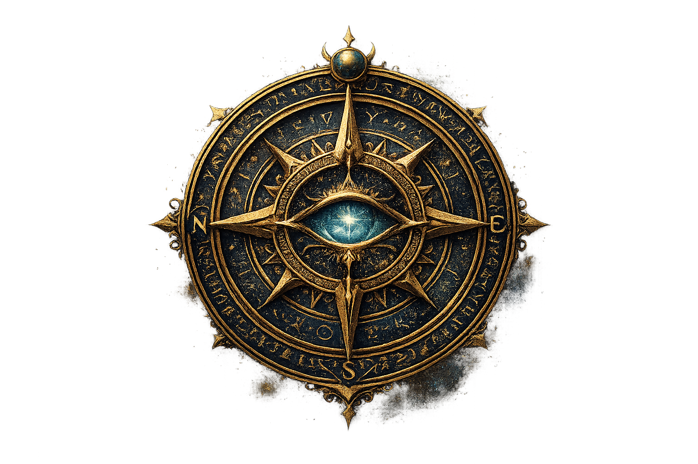

Welcome to Mythical Mysteries, where history blurs into legend. From the lost city of Atlantis to ancient wonders and divine tales, we explore the world's greatest enigmas. Are these myths rooted in truth, or pure imagination?

Let's know and uncover them together
Welcome to Mythical Mysteries, where history blurs into legend. From the lost city of Atlantis to ancient wonders and divine tales, we explore the world's greatest enigmas. Are these myths rooted in truth, or pure imagination?